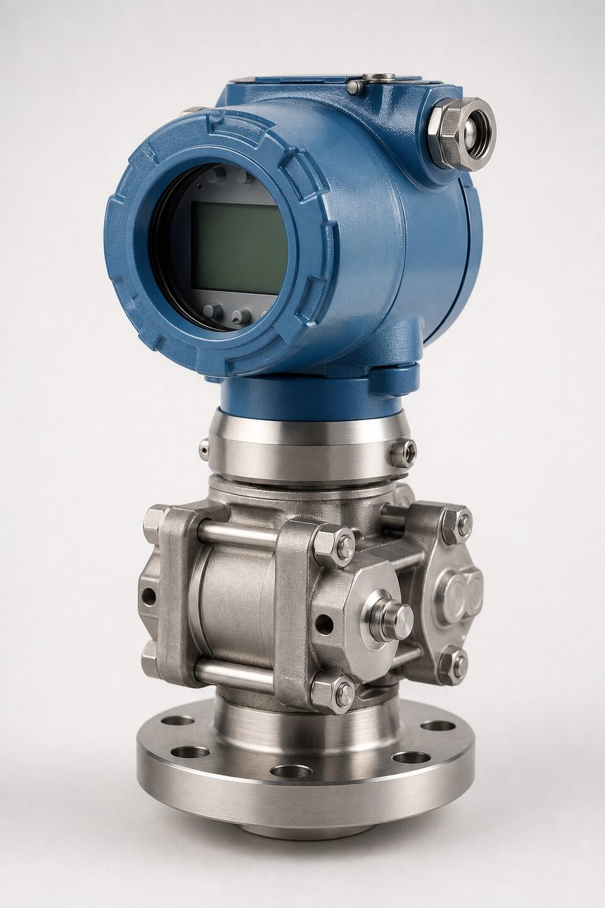

خانواده (EJA) و جایگاه آن
خانواده (EJA) محصول برند یوکوگاوا، نسل شناختهشدهای از ترانسمیترهای فشار و اختلاف فشار است که در صنایع فرایندی جهان نصبهای بسیار زیادی دارد. جایگاه این خانواده در نقاطی است که پایداری بلندمدت و کاهش دفعات کالیبراسیون ارزش اقتصادی دارد: خطوط انتقال، واحدهای فرایندی حساس و نقاطی که دسترسی برای کالیبراسیون پرهزینه است. این ترانسمیترها با پروتکلهای دیجیتال رایج و قابلیتهای تشخیصی عرضه میشوند و در سبد بسیاری از پروژههای نفت و گاز حضور دارند.

فناوری سنسور رزونانسی
نقطه تمایز اصلی این خانواده، سنسور رزونانسی سیلیکونی است: دو المان تشدیدکننده روی یک دیافراگم سیلیکونی قرار دارند و با اعمال فشار، فرکانس تشدید آنها تغییر میکند. چون اندازهگیری بر پایه فرکانس است، سیگنال به صورت ذاتی دیجیتال بوده و نسبت به روشهای آنالوگ قدیمی، حساسیت کمتری به دما و نویز دارد. نتیجه، دریفت بسیار پایین در طول زمان است؛ ویژگیای که در عمل به معنای کالیبراسیون کمتر و خوانش قابل اتکاتر در بازههای بلند است. این فناوری به ویژه در نقاطی که کالیبراسیون دورهای دشوار یا پرهزینه است، مزیت ملموسی ایجاد میکند.
مدلها و کاربردها
- مدلهای فشار گیج: برای خطوط و مخازن باز؛ رایجترین انتخاب عمومی.
- مدلهای فشار مطلق: برای نقاطی که مرجع اتمسفر قابل اتکا نیست.
- مدلهای اختلاف فشار: دبی با اوریفیس، سطح مخازن و پایش فیلتر.
- مدلهای فشار بالا: برای سرویسهای خاص با رنجهای بالاتر.
- مدلهای با خروجی دیجیتال: پیکربندی و تشخیص از راه دور.
معیارهای انتخاب و استعلام
در استعلام، رنج فشار کاری با حاشیه مناسب، نوع فشار، سیال و دمای آن، اتصال فرایند و متریال بخش خیس، خروجی و پروتکل ارتباطی و الزامات ناحیه خطر را مشخص کنید. اگر تجهیز جایگزین یک نمونه نصبشده میشود، تطبیق ابعاد اتصال و رنج با لوپ موجود اهمیت دارد تا دوبارهکاری ایجاد نشود. در پروژههای دارای وندورلیست، تایید مدل دقیق پیش از سفارش الزامی است. مدارک کالیبراسیون کارخانهای و در صورت نیاز تاییدیههای ناحیه خطر نیز بخشی از تحویل استاندارد است.
همچنین در صورت نیاز به جایگزینی با برندهای دیگر، تطبیق ابعاد نصب و مدارک را از ابتدا بررسی کنید.
جمعبندی
خانواده (EJA) به دلیل فناوری رزونانسی و پایداری بلندمدت، انتخابی مطمئن برای نقاط حساس اندازهگیری فشار است. با انتخاب مدل متناسب نوع فشار و ذکر کامل پارامترها در استعلام، میتوان تجهیز کالیبره و منطبق با لوپ موجود دریافت کرد و هزینههای کالیبراسیون و نگهداری را در طول عمر تجهیز کاهش داد.
سوالات رایج
فناوری اندازهگیری این خانواده چیست؟
سنسورهای رزونانسی سیلیکونی: تغییر فشار، فرکانس تشدید دو المان سیلیکونی را تغییر میدهد و این تغییر فرکانس به صورت دیجیتال اندازهگیری میشود؛ روشی با پایداری بلندمدت بالا و حساسیت کم به دما.
چرا پایداری بلندمدت اهمیت دارد؟
ترانسمیتر فشار در نقاط حساس سالها بدون کالیبراسیون مکرر کار میکند؛ دریفت کم یعنی خوانش قابل اتکا و کاهش دفعات کالیبراسیون. این ویژگی یکی از دلایل اصلی انتخاب این خانواده در پروژههاست.
کدام مدل برای اختلاف فشار است؟
مدلهای اختصاصی اختلاف فشار با دو پورت فرایند عرضه میشوند و برای دبی با اوریفیس، سطح مخازن و پایش فیلتر کاربرد دارند؛ مدلهای تکپورت نیز برای فشار گیج و مطلق استفاده میشوند.
در استعلام چه مواردی ذکر شود؟
رنج فشار، نوع فشار (گیج، مطلق یا اختلاف)، سیال و دما، اتصال فرایند، خروجی و پروتکل و الزامات ناحیه خطر؛ در پروژههای دارای وندورلیست نیز تایید مدل الزامی است.
مطالب مرتبط
با ذکر رنج، نوع فشار و پروتکل، ترانسمیتر فشار از برندهای معتبر به همراه مدارک کالیبراسیون عرضه میشود.
مشاهده صفحه محصول ← ثبت RFQ همین محصولتامین این تجهیزات را به پیشرو تجهیز فرتاک بسپارید
شرکت پیشرو تجهیز فرتاک تامینکننده تخصصی تجهیزات صنعتی برای پروژههای نفت، گاز، پتروشیمی، فولاد و نیروگاهی است. برای دریافت پیشنهاد فنی و قیمت، استعلام (RFQ) خود را ثبت کنید تا کارشناسان مهندسی فروش در کوتاهترین زمان پاسخ دهند.
- تامین ابزار دقیقترانسمیترها و آنالایزرهای برندهای معتبر
- تامین تجهیزات صنایع نفت و گازپکیج مواد مطابق وندورلیست